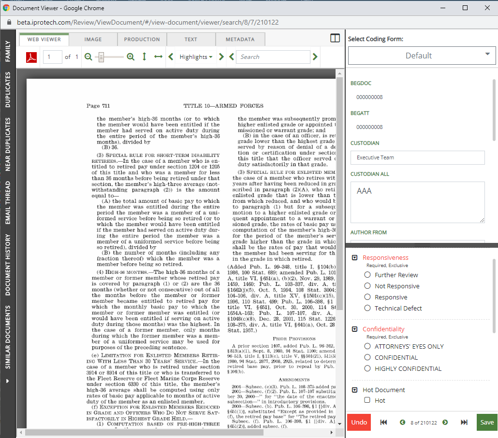
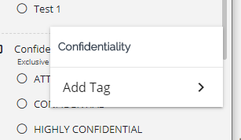
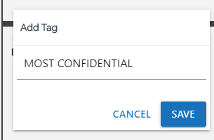
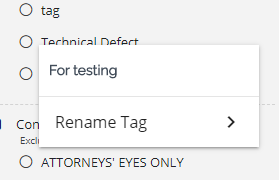
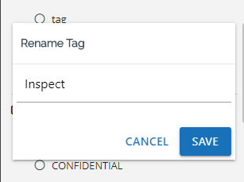

Click the Enter Case  button.
button.
The Visual Search dashboard appears.




|
This function is also explained in educational content on the IPRO Learning Center. Click the following link to be redirected to the |
In the
Click the Enter Case button.
The Visual Search dashboard appears.



In the


In the Document Viewer, you have the ability to create a search to quickly find all documents where a specific tag has been applied, or to find all documents that do not have that tag applied. The search criteria is added to the queue in the Visual Search dashboard and can be run as is, or updated with additional search criteria.
For an overview of adding a tag to search criteria, click the video below.
In the tag pane to the right, right-click the tag you want to search.
Select Add Tag to search criteria.

The selection window opens giving you the choice to search for all tagged documents or all untagged documents.

|
|
Note: The tag must be selected to create the search. |
Once a selection is made, it will be added to the search queue in the Visual Search dashboard.

Click  to run the search.
to run the search.
Related Topics: